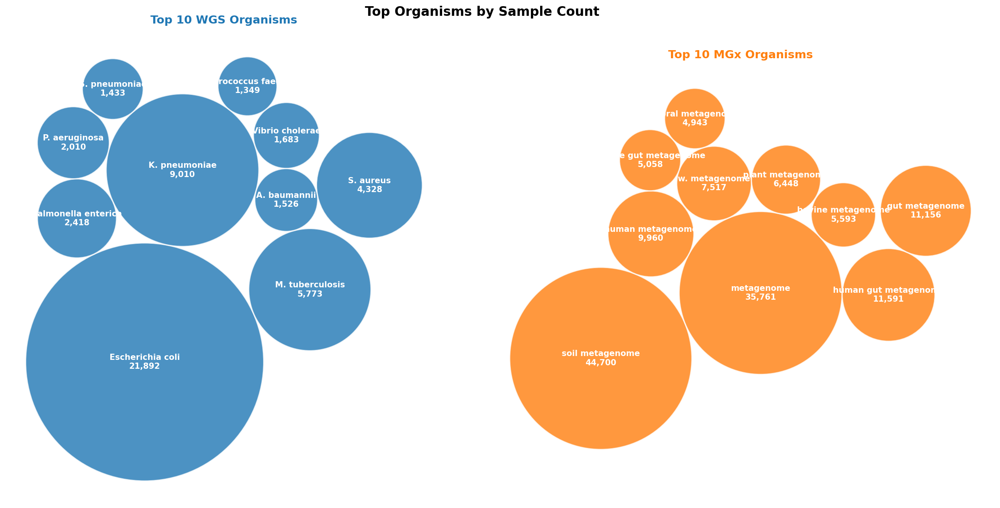

Bacterial genomes & metagenomes,
sequenced with long reads
A weekly-refreshed catalogue of Oxford Nanopore and PacBio sequencing runs for bacterial whole-genome and metagenomic samples, with biosamples that also have matching short-read data for hybrid assembly.
Dashboards
Filter, sort and export sample-level metadata. Each dashboard loads its full dataset in the browser.
Whole Genome Sequencing
Bacteria · long readsBrowse bacterial whole-genome sequencing runs from Oxford Nanopore and PacBio platforms, with per-organism read and base distributions.
Metagenomics
Metagenomes · long readsExplore metagenomic sequencing runs across long-read technologies, including amplicon and non-amplicon libraries.
Hybrid WGS
Short + long reads · same biosampleBiosamples with both short-read and long-read whole-genome data in SRA, ideal for hybrid assembly workflows.
Hybrid MGx
Short + long reads · metagenomesMetagenomic biosamples with both short-read and long-read data, enabling richer community-level analyses.
Sample growth over time
Counts recorded at each weekly data refresh.
Top organisms by sample count
Bubble area is proportional to the number of samples, for WGS and MGx separately.

About the data
Source
Run-level metadata is retrieved from the ENA Portal API for bacterial (tax 2) and metagenomic (tax 408169) samples sequenced on OXFORD_NANOPORE or PACBIO_SMRT platforms.
Hybrid detection
For every long-read biosample, SRA is queried for additional runs on short-read platforms (Illumina, BGI/DNBSEQ, Ion Torrent). Biosamples with both are listed in the Hybrid dashboards, with linked studies and PubMed IDs.
Refresh cadence
A GitHub Actions workflow re-runs the extraction every Sunday, records the new totals in sample_counts.csv, regenerates the figures and redeploys this site.